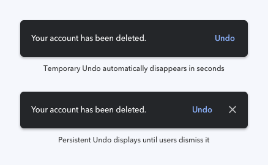

Sarthak Chitade
June 8, 2022"Good design is actually a lot harder to notice than poor design, in part because good designs fit our needs so well that the design is invisible."
- Don Norman
UI/UX is the field in the industry which focuses on the display elements on screen of any computer device. This mainly deals with the screens and to create the bridge to provide the users a way to interact with the computer. As simple as it is described above the field of UI/UX has evolved with the new technologies and advancements in the computers and mobile phones. This is why it has grown with a lot more complexities to cope up with the modern world designs and human behavior. As you are already on the blog might have a high level idea about the topic this article will further take you through the details.
There is a lot of debate regarding the UI vs UX. Some consider both the things to be dropped under same category as related to the designing part while some consider it as different as both have their different aspects and differently impact the overall user satisfaction while on screen.
UI and UX however are considerably different but goes along with each other during the designing phase of any product.
UI is all about the color contrast, styling, typography, screen layout, orientation, images etc. All those things which will make the page look more attractive and appealing. Efforts are put in to make the user fall in love with the way something looks at first sight.
On the other hand the UX can be considered as flow design of the application, user interaction with the features and other components of the product. The experience of the user while using the product.
Both the components are equally important and should be kept in mind while designing a product. UI as explained above, makes user hook to the screen at first sight and hence need to be very appealing. Whereas to keep the user on the application for long run it is very important to make the experience better, no one likes to take extra efforts to perform simple tasks. Making frequently used things available on the go adds up to the good user experience.
User interface is the visual components buttons pages layouts and the other visible components on the page with which user interacts. User interfaces are the visible part of any application pages and is composition of various things like, buttons, colors, styles etc. This is somewhat a typical definition of UI you may find over the internet. And that’s exactly what it is. But and as there's always a but, people usually misunderstand the designing of good user interface with just how pretty it should look. It's not just limited to it. Speaking about it in detail it is not just how good the interface looks, but also contains the minor details which help users to easily interact without paying much attention into the details.
And how's that? Let us take an example where the we have a page popup with two buttons "Delete" & "Cancel" appear with same color width height and text. In this case the user will need to read the text on both the buttons before clicking on any one of it, but the same would be much more easier for the user if the button for "Delete" would be in red color indicating alert action with destructive behavior. "Cancel" button be more light weight so the user get the visual aid and don’t have to pay much attention to the details.
Other example we can take is the toggle button changing its color to gray or the colored, indicating if it is on/off. All these things make a huge difference as it unknowingly make the UI more easy to understand to the end users by highlighting the necessary details and providing the visual aid without paying much attention into the details.
And how's that? Let us take an example where the we have a page popup with two buttons "Delete" & "Cancel" appear with same color width height and text. In this case the user will need to read the text on both the buttons before clicking on any one of it, but the same would be much more easier for the user if the button for "Delete" would be in red color indicating alert action with destructive behavior. "Cancel" button be more light weight so the user get the visual aid and don’t have to pay much attention to the details.
Other example we can take is the toggle button changing its color to gray or the colored, indicating if it is on/off. All these things make a huge difference as it unknowingly make the UI more easy to understand to the end users by highlighting the necessary details and providing the visual aid.
Take an example of Uber/Ola/Amazon/Zomato all these applications has one thing in common. Each one of them provide the visuals and main feature of the product as soon as user enters. It’s the first thing user will see on screen.
Let's take example of Uber. What does a user wants when he/she opens the Uber App? Certainly wants to go somewhere and to book a cab for the location. As soon as you open Uber App It will ask you to enter the address of the destination. Bam!! that’s it. No navigation, no button which says "click here to book a cab" nothing, It provides user the exact thing they wanted. That is the what we consider as good user experience. The whole point of producing the better UX design is to make things as simple as possible for users.
There is no set formula to design great UI/UX it totally depends on the requirement and functionalities provided in the application. However few things should always being taken care of while designing. These can help make the better UI but is not limited to and there's always scope to make something better.
Let's check few of the techniques which can help creating great UI.
It's not good design need to have lot of things and lot of features present on the screen everything available on single touch. A good design need to be soothing to the eyes of the users. It should be as simple as possible so that it provides the information in minimal way. Good UI need to be easy to understand and to operate as well.
Landing page of the UI need to provide only the most important information about the application and should not be crowded, the users may get confused with lot of information at a time.
It's better to use light soothing color scheme, the design should itself have lot of space to breathe, providing ample spacings to all the components helps to distinguish them from the other elements on the layout.
It's important to maintain the consistency in the design of the UI. Consistency in all the aspects which gives the smooth experience to the users while interacting with interface. Keeping design helps the end users to distinguish between the hierarchy and functionality of the elements.
Following are the things in which you should maintain consistency on the UI:
Sometimes to make design more attractive people put in extra efforts, however it should always be kept in mind that the design is always based on the natural principles and these cannot be violated.
Similar way the shadow are always casted on ground and light comes from top, every good UI designer keeps these formulas intact. The shadows of the boxes, cards, buttons should always be at the bottom of that element.
In order to make the users comfortable with the design, it is important make the design reversible. Users should be comfortable while making the mistakes. For any action to be performed the user should be able to take a step back. Submitting some info should be editable later by the user. What most of the UI provides the Undo option on deleting the record. This makes users comfortable interacting with the application.
It is somehow difficult to build the fastest system than what humans expect. The human tolerance level is very low that wait time of 1-2 seconds can make them irritate. And keeping the fact in mind that there are several factors like network connectivity and other things it is sometime difficult to deliver service on the go which keep user waiting without any clue.
How to tackle with such situations?
It's better to design the User interface which will provide the instant feedback even if the action is not completed. This helps users to get acknowledgement that the action is triggered and is under progress.
Simplest example for this is the WhatsApp messages. Even if the message is not sent to the user it appears on the screen which gives users the sense of progress in the activity. This is way more efficient than make users see the blank screen by the time the message is actually delivered to the user.